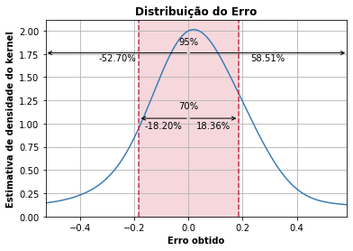
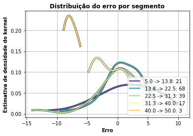

Função do componente
Este é um componente que utiliza a biblioteca auto-sklearn para obter um ou mais modelos regressores já otimizados.
O auto-sklearn é um kit de ferramentas de machine learning automatizado e um substituto para estimator do scikit-learn.
Entrada esperada
Espera-se como entrada para o componente uma tabela com colunas que representam valores numéricos ou categóricos.
Parâmetros
Na tabela abaixo, observamos os parâmetros necessários para que o componente funcione da maneira correta:
Atributo alvo |
| - | Seu modelo será treinado para prever os valores do alvo. |
Modo de seleção das features |
|
| Se deseja informar quais features deseja incluir no modelo, selecione a opção ‘incluir'. Caso deseje informar as features que não devem ser utilizadas, selecione ‘remover'. |
Features para incluir/remover no modelo |
| - | Seu modelo será feito considerando apenas as features selecionadas. Caso nada seja especificado, todas as features serão utilizadas |
Features para fazer codificação ordinal |
| - | Seu modelo utilizará a codificação ordinal para as features selecionadas. As demais features categóricas serão codificadas utilizando One-Hot-Encoding. |
Tempo máximo de busca |
| - | Limite de tempo (em segundos) para a procura de modelos apropriados. |
Tempo máximo para ajuste de modelo |
| - | Limite de tempo (em segundos), para uma única chamada, para ajuste de um modelo de Machine Learning. |
Ensemble Learning |
| - | Número de modelos adicionados ao conjunto criado pela seleção do Ensemble das bibliotecas de modelos. |
Métricas de performance
- Coeficiente de determinação (ou R²): Corresponde à correlação ao quadrado entre os valores de resultado observados e os valores previstos pelo modelo.
Retorno esperado no experimento
- Dados de teste:

- Distribuição do erro na regressão:

- Diferença do erro:

- Diferença ordenada do erro:

- Erro absoluto:

- Probabilidade do erro:

- Erro por segmento:

- Tabela dos dados:

Retorno esperado na implantação
Tabela com os valores preditos para o atributo alvo.